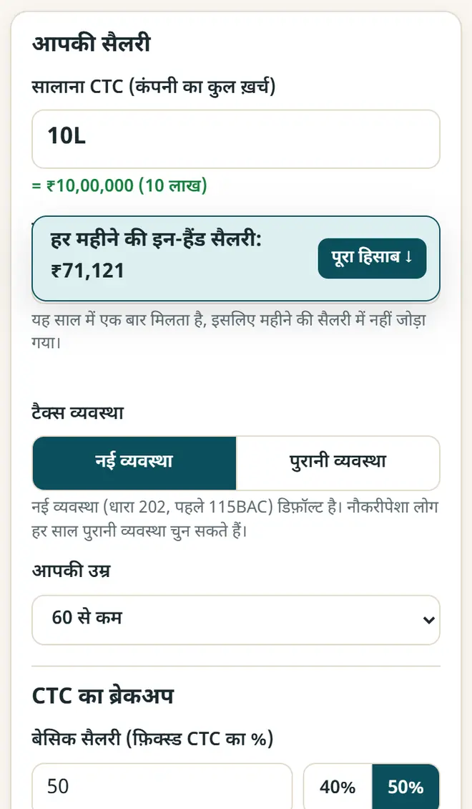
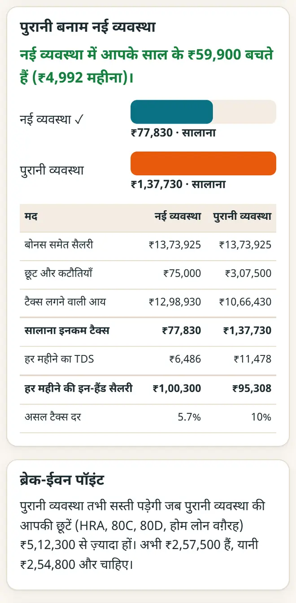

CTC से इन-हैंड सैलरी: टैक्स वर्ष 2026-27 के लिए हिसाब
आपका CTC वह रक़म नहीं है जो बैंक में आती है। पहले PF, प्रोफ़ेशनल टैक्स, ग्रेच्युटी और इनकम टैक्स कटते हैं। हर महीने असल में कितना हाथ में आएगा, और आपके लिए कौन-सी टैक्स व्यवस्था बेहतर है, यह कैसे निकालें, यहाँ देखिए।
छोटा जवाब
महीने की इन-हैंड सैलरी = (CTC − कंपनी का PF − ग्रेच्युटी − साल का बोनस) ÷ 12, उसमें से आपका अपना PF, प्रोफ़ेशनल टैक्स और महीने का इनकम टैक्स (TDS) घटाएँ। टैक्स वर्ष 2026-27 में नई व्यवस्था में ₹12 लाख तक की आय पर कोई टैक्स नहीं, यानी ₹75,000 के स्टैंडर्ड डिडक्शन के बाद ₹12.75 लाख तक की सैलरी। सैलरी और इनकम टैक्स कैलकुलेटर यह सब आपके लिए करता है।
5 स्टेप में अपनी इन-हैंड सैलरी जानें
-
अपना सालाना CTC लिखें
सैलरी और इनकम टैक्स कैलकुलेटर खोलें और CTC वैसे ही लिखें जैसे बोलते हैं: 12L, 12.5 lakh, 85k या 12,00,000। महीने की इन-हैंड सैलरी तुरंत दिखती है।

CTC लिखें: महीने की इन-हैंड सैलरी तुरंत दिखती है। -
ऑफ़र लेटर से CTC का ब्रेकअप भरें
अपने ऑफ़र लेटर से बेसिक %, HRA, PF, ग्रेच्युटी और बोनस भरें, और प्रोफ़ेशनल टैक्स के लिए अपना राज्य चुनें। तब नतीजा आपकी सैलरी स्लिप से काफ़ी मिलता है।
-
नई और पुरानी व्यवस्था की तुलना करें
“पुरानी बनाम नई व्यवस्था” खोलें। पुरानी व्यवस्था की छूट में अपना किराया, 80C, 80D और होम लोन का ब्याज भरें। ऐप बताता है कि किस व्यवस्था में ज़्यादा बचत है, और ब्रेक-ईवन रक़म कितनी है।

पुरानी बनाम नई व्यवस्था, ब्रेक-ईवन पॉइंट के साथ। -
टैक्स का हिसाब देखें
टैक्स का पूरा हिसाब खोलें: स्टैंडर्ड डिडक्शन, हर स्लैब का टैक्स, रिबेट, सेस और महीने का TDS, लाइन दर लाइन।
-
हाइक या नौकरी का ऑफ़र जाँचें
“सैलरी हाइक” से देखें कि बढ़ोतरी का कितना हिस्सा बैंक तक पहुँचेगा, और “इन-हैंड → CTC” से जानें कि नई नौकरी में कितना CTC माँगें।
टैक्स वर्ष 2026-27 के लिए नई व्यवस्था के स्लैब
- ₹4 लाख तक: शून्य · ₹4–8 लाख: 5% · ₹8–12 लाख: 10% · ₹12–16 लाख: 15% · ₹16–20 लाख: 20% · ₹20–24 लाख: 25% · ₹24 लाख से ऊपर: 30%।
- नौकरीपेशा लोगों का स्टैंडर्ड डिडक्शन: नई व्यवस्था में ₹75,000 और पुरानी में ₹50,000।
- रिबेट: नई व्यवस्था में कुल आय ₹12 लाख तक हो तो कोई टैक्स नहीं (पुरानी में ₹5 लाख तक), और ₹12 लाख से थोड़ा ऊपर मार्जिनल रिलीफ़।
- टैक्स पर 4% हेल्थ और एजुकेशन सेस जुड़ता है। ये नियम आयकर अधिनियम, 2025 के हैं, जो 1 अप्रैल 2026 से लागू है; बजट 2026 में स्लैब नहीं बदले।
यह गाइड सामान्य जानकारी है, टैक्स या क़ानूनी सलाह नहीं। अपने मामले के लिए किसी टैक्स जानकार से पूछें।
नए मुफ़्त टूल और हिंदी में AI के पाठ पाएँ
हमारी ईमेल लिस्ट से जुड़ें: नए मुफ़्त ऐप, नई गाइड और AI पर हिंदी वीडियो पाठ की जानकारी आपको मिलती रहेगी। कोई स्पैम नहीं।
सिर्फ़ वयस्कों (18+) के लिए। आप कभी भी नाम हटवा सकते हैं।
हम ये टूल क्यों सुझाते हैं
- सबके लिए मुफ़्त: न विज्ञापन, न साइन-अप, न कोई पेड प्लान।
- प्राइवेट: आपकी फ़ाइलें और जानकारी आपके अपने डिवाइस पर ही रहती हैं।
- फ़ोन, लैपटॉप या स्मार्टबोर्ड पर चलते हैं, और एक बार खुलने के बाद बिना इंटरनेट भी।
- हिंदी समेत 12 भाषाओं में।
वीडियो से सीखना पसंद है? हमारे YouTube चैनल पर AI और मुफ़्त टूल्स के हिंदी पाठ देखें।
अक्सर पूछे जाने वाले सवाल
₹10 लाख CTC पर इन-हैंड सैलरी कितनी होती है?
आम ब्रेकअप (CTC का 50% बेसिक, पूरे बेसिक पर PF, CTC में ग्रेच्युटी, ₹2,500 प्रोफ़ेशनल टैक्स) के साथ ₹10 लाख CTC पर नई व्यवस्था में लगभग ₹71,000 महीना हाथ में आता है, और इनकम टैक्स शून्य। आपकी असली रक़म आपके ब्रेकअप पर निर्भर है।
क्या 2026-27 में ₹12 लाख तक की आय टैक्स-फ़्री है?
नई व्यवस्था में, हाँ: कुल आय ₹12 लाख तक हो तो रिबेट से टैक्स शून्य हो जाता है। नौकरीपेशा लोगों के लिए इसका मतलब है ₹75,000 के स्टैंडर्ड डिडक्शन के बाद ₹12.75 लाख तक की सैलरी।
नई या पुरानी, कौन-सी व्यवस्था बेहतर है?
जिनकी बड़ी छूटें नहीं हैं, उनमें से ज़्यादातर के लिए नई व्यवस्था में टैक्स कम लगता है। अगर आप HRA, 80C, 80D और होम लोन की बड़ी छूटें लेते हैं, तो पुरानी जीत सकती है। कैलकुलेटर आपकी सैलरी के लिए ब्रेक-ईवन पॉइंट दिखाता है।
CTC और ग्रॉस सैलरी में क्या फ़र्क़ है?
CTC वह सब है जो कंपनी साल भर में आप पर ख़र्च करती है, जिसमें कंपनी का PF और ग्रेच्युटी भी है। ग्रॉस सैलरी = CTC में से ये घटाकर। इन-हैंड = ग्रॉस में से आपका अपना PF, प्रोफ़ेशनल टैक्स और इनकम टैक्स घटाकर।
क्या मेरी सैलरी की जानकारी कहीं सेव होती है?
नहीं। कैलकुलेटर आपके डिवाइस पर ही चलता है। कुछ भी अपलोड नहीं होता, और कोई लॉगिन नहीं।
काम की लगी?
इसे किसी दोस्त, साथियों या अपने स्कूल के WhatsApp ग्रुप में भेजें।